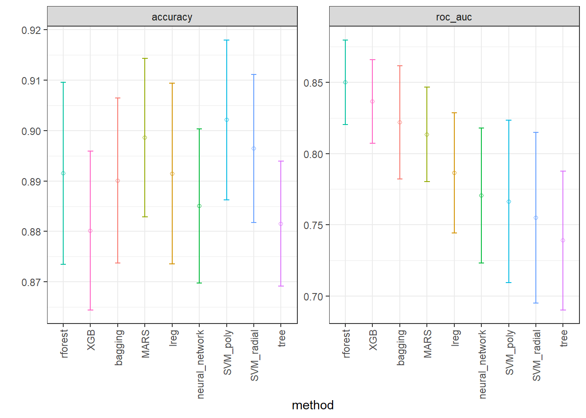
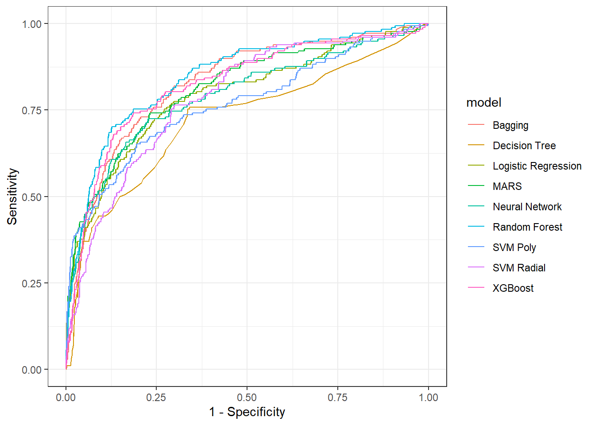
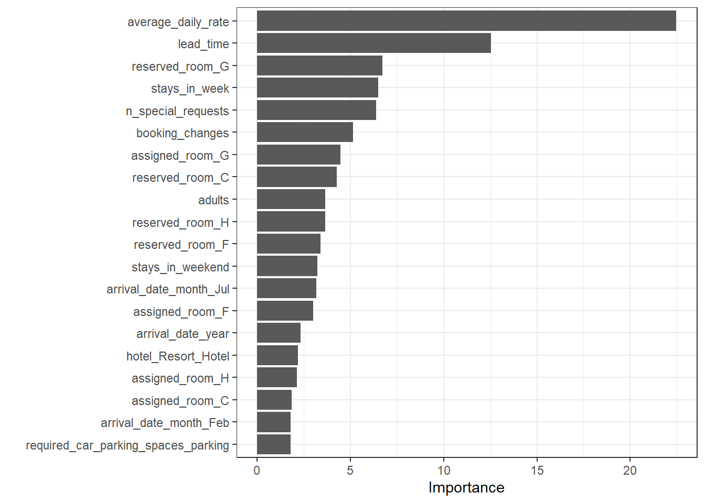

library(tidymodels)
library(readr)
library(modelsummary)
library(dplyr)
library(bonsai)
library(baguette)
library(finetune)
library(vip)Classificação via pacote tidymodels
Classificação de cancelamento de reservas de hotéis via pacote tidymodels
Bibliotecas
Leitura dos dados
Dados obtidos em https://www.tidymodels.org/start/case-study/#data.
hotels <-
read_csv("https://tidymodels.org/start/case-study/hotels.csv")
dim(hotels)[1] 50000 23#> [1] 50000 23hotels <- hotels |>
mutate(across(where(is.character), as.factor))head(hotels)# A tibble: 6 × 23
hotel lead_time stays_in_weekend_nig…¹ stays_in_week_nights adults children
<fct> <dbl> <dbl> <dbl> <dbl> <fct>
1 City_Ho… 217 1 3 2 none
2 City_Ho… 2 0 1 2 none
3 Resort_… 95 2 5 2 none
4 Resort_… 143 2 6 2 none
5 Resort_… 136 1 4 2 none
6 City_Ho… 67 2 2 2 none
# ℹ abbreviated name: ¹stays_in_weekend_nights
# ℹ 17 more variables: meal <fct>, country <fct>, market_segment <fct>,
# distribution_channel <fct>, is_repeated_guest <dbl>,
# previous_cancellations <dbl>, previous_bookings_not_canceled <dbl>,
# reserved_room_type <fct>, assigned_room_type <fct>, booking_changes <dbl>,
# deposit_type <fct>, days_in_waiting_list <dbl>, customer_type <fct>,
# average_daily_rate <dbl>, required_car_parking_spaces <fct>, …Visão geral e limpeza dos dados
hotels |>
glimpse()Rows: 50,000
Columns: 23
$ hotel <fct> City_Hotel, City_Hotel, Resort_Hotel, R…
$ lead_time <dbl> 217, 2, 95, 143, 136, 67, 47, 56, 80, 6…
$ stays_in_weekend_nights <dbl> 1, 0, 2, 2, 1, 2, 0, 0, 0, 2, 1, 0, 1, …
$ stays_in_week_nights <dbl> 3, 1, 5, 6, 4, 2, 2, 3, 4, 2, 2, 1, 2, …
$ adults <dbl> 2, 2, 2, 2, 2, 2, 2, 0, 2, 2, 2, 1, 2, …
$ children <fct> none, none, none, none, none, none, chi…
$ meal <fct> BB, BB, BB, HB, HB, SC, BB, BB, BB, BB,…
$ country <fct> DEU, PRT, GBR, ROU, PRT, GBR, ESP, ESP,…
$ market_segment <fct> Offline_TA/TO, Direct, Online_TA, Onlin…
$ distribution_channel <fct> TA/TO, Direct, TA/TO, TA/TO, Direct, TA…
$ is_repeated_guest <dbl> 0, 0, 0, 0, 0, 0, 0, 0, 0, 0, 0, 0, 0, …
$ previous_cancellations <dbl> 0, 0, 0, 0, 0, 0, 0, 0, 0, 0, 0, 0, 0, …
$ previous_bookings_not_canceled <dbl> 0, 0, 0, 0, 0, 0, 0, 0, 0, 0, 0, 0, 0, …
$ reserved_room_type <fct> A, D, A, A, F, A, C, B, D, A, A, D, A, …
$ assigned_room_type <fct> A, K, A, A, F, A, C, A, D, A, D, D, A, …
$ booking_changes <dbl> 0, 0, 2, 0, 0, 0, 0, 0, 0, 0, 0, 0, 0, …
$ deposit_type <fct> No_Deposit, No_Deposit, No_Deposit, No_…
$ days_in_waiting_list <dbl> 0, 0, 0, 0, 0, 0, 0, 0, 0, 0, 0, 0, 0, …
$ customer_type <fct> Transient-Party, Transient, Transient, …
$ average_daily_rate <dbl> 80.75, 170.00, 8.00, 81.00, 157.60, 49.…
$ required_car_parking_spaces <fct> none, none, none, none, none, none, non…
$ total_of_special_requests <dbl> 1, 3, 2, 1, 4, 1, 1, 1, 1, 1, 0, 1, 0, …
$ arrival_date <date> 2016-09-01, 2017-08-25, 2016-11-19, 20…Contando níveis da resposta.
hotels |>
count(children) |>
mutate(prop = n/sum(n))# A tibble: 2 × 3
children n prop
<fct> <int> <dbl>
1 children 4038 0.0808
2 none 45962 0.919 Mudando nomes dos níveis da variável.
hotels$children <- recode_factor(
hotels$children,
children = "child",
none = "no")hotels |>
count(children) |>
mutate(prop = n/sum(n))# A tibble: 2 × 3
children n prop
<fct> <int> <dbl>
1 child 4038 0.0808
2 no 45962 0.919 colnames(hotels) [1] "hotel" "lead_time"
[3] "stays_in_weekend_nights" "stays_in_week_nights"
[5] "adults" "children"
[7] "meal" "country"
[9] "market_segment" "distribution_channel"
[11] "is_repeated_guest" "previous_cancellations"
[13] "previous_bookings_not_canceled" "reserved_room_type"
[15] "assigned_room_type" "booking_changes"
[17] "deposit_type" "days_in_waiting_list"
[19] "customer_type" "average_daily_rate"
[21] "required_car_parking_spaces" "total_of_special_requests"
[23] "arrival_date" Mudando nomes de algumas variáveis (colunas).
hotels <- hotels |>
rename(n_special_requests = total_of_special_requests,
stays_in_weekend = stays_in_weekend_nights,
stays_in_week = stays_in_week_nights)
hotels |> colnames() [1] "hotel" "lead_time"
[3] "stays_in_weekend" "stays_in_week"
[5] "adults" "children"
[7] "meal" "country"
[9] "market_segment" "distribution_channel"
[11] "is_repeated_guest" "previous_cancellations"
[13] "previous_bookings_not_canceled" "reserved_room_type"
[15] "assigned_room_type" "booking_changes"
[17] "deposit_type" "days_in_waiting_list"
[19] "customer_type" "average_daily_rate"
[21] "required_car_parking_spaces" "n_special_requests"
[23] "arrival_date" Selecionando apenas um país para modelagem.
hotels |>
count(country) |>
mutate(prop = n/sum(n)) |>
arrange(desc(n))# A tibble: 155 × 3
country n prop
<fct> <int> <dbl>
1 PRT 14046 0.281
2 GBR 6405 0.128
3 FRA 5627 0.113
4 ESP 4298 0.0860
5 DEU 4047 0.0809
6 IRL 1691 0.0338
7 ITA 1607 0.0321
8 BEL 1250 0.025
9 NLD 1123 0.0225
10 USA 1059 0.0212
# ℹ 145 more rowshotels_ <- hotels |>
filter(country == "BRA")hotels_ <- hotels_ |>
rename_with(~gsub("total", "n", .x, fixed = TRUE))
hotels_ |> colnames() [1] "hotel" "lead_time"
[3] "stays_in_weekend" "stays_in_week"
[5] "adults" "children"
[7] "meal" "country"
[9] "market_segment" "distribution_channel"
[11] "is_repeated_guest" "previous_cancellations"
[13] "previous_bookings_not_canceled" "reserved_room_type"
[15] "assigned_room_type" "booking_changes"
[17] "deposit_type" "days_in_waiting_list"
[19] "customer_type" "average_daily_rate"
[21] "required_car_parking_spaces" "n_special_requests"
[23] "arrival_date" hotels_ <- hotels_ |>
rename_with(~gsub("_type", "", .x, fixed = TRUE))
hotels_ |> colnames() [1] "hotel" "lead_time"
[3] "stays_in_weekend" "stays_in_week"
[5] "adults" "children"
[7] "meal" "country"
[9] "market_segment" "distribution_channel"
[11] "is_repeated_guest" "previous_cancellations"
[13] "previous_bookings_not_canceled" "reserved_room"
[15] "assigned_room" "booking_changes"
[17] "deposit" "days_in_waiting_list"
[19] "customer" "average_daily_rate"
[21] "required_car_parking_spaces" "n_special_requests"
[23] "arrival_date" Comparando colunas.
hotels_ |>
mutate(
comparison = if_else(
as.character(reserved_room) == as.character(assigned_room), "equal", "different")) |>
select(ends_with("_room"), comparison) |> head()# A tibble: 6 × 3
reserved_room assigned_room comparison
<fct> <fct> <chr>
1 A A equal
2 A A equal
3 A A equal
4 A A equal
5 A A equal
6 A A equal Resumo dos dados
datasummary_skim(hotels_)Warning: These variables were omitted because they include more than 50 levels:
country.| Unique | Missing Pct. | Mean | SD | Min | Median | Max | Histogram | |
|---|---|---|---|---|---|---|---|---|
| lead_time | 193 | 0 | 62.7 | 64.4 | 0.0 | 40.0 | 342.0 |  |
| stays_in_weekend | 6 | 0 | 0.9 | 0.9 | 0.0 | 1.0 | 6.0 |  |
| stays_in_week | 12 | 0 | 2.3 | 1.7 | 0.0 | 2.0 | 16.0 |  |
| adults | 4 | 0 | 2.0 | 0.5 | 0.0 | 2.0 | 3.0 |  |
| is_repeated_guest | 2 | 0 | 0.0 | 0.1 | 0.0 | 0.0 | 1.0 |  |
| previous_cancellations | 2 | 0 | 0.0 | 0.4 | 0.0 | 0.0 | 11.0 |  |
| previous_bookings_not_canceled | 4 | 0 | 0.0 | 0.2 | 0.0 | 0.0 | 3.0 |  |
| booking_changes | 7 | 0 | 0.3 | 0.8 | 0.0 | 0.0 | 8.0 |  |
| days_in_waiting_list | 5 | 0 | 0.5 | 7.0 | 0.0 | 0.0 | 167.0 |  |
| average_daily_rate | 517 | 0 | 106.6 | 45.8 | 0.0 | 97.7 | 311.2 |  |
| n_special_requests | 6 | 0 | 0.9 | 0.9 | 0.0 | 1.0 | 5.0 |  |
| N | % | |||||||
| hotel | City_Hotel | 724 | 76.9 | |||||
| Resort_Hotel | 217 | 23.1 | ||||||
| children | child | 119 | 12.6 | |||||
| no | 822 | 87.4 | ||||||
| meal | BB | 781 | 83.0 | |||||
| FB | 0 | 0.0 | ||||||
| HB | 22 | 2.3 | ||||||
| SC | 138 | 14.7 | ||||||
| Undefined | 0 | 0.0 | ||||||
| market_segment | Aviation | 0 | 0.0 | |||||
| Complementary | 4 | 0.4 | ||||||
| Corporate | 19 | 2.0 | ||||||
| Direct | 116 | 12.3 | ||||||
| Groups | 32 | 3.4 | ||||||
| Offline_TA/TO | 122 | 13.0 | ||||||
| Online_TA | 648 | 68.9 | ||||||
| distribution_channel | Corporate | 21 | 2.2 | |||||
| Direct | 119 | 12.6 | ||||||
| GDS | 1 | 0.1 | ||||||
| TA/TO | 800 | 85.0 | ||||||
| Undefined | 0 | 0.0 | ||||||
| reserved_room | A | 635 | 67.5 | |||||
| B | 14 | 1.5 | ||||||
| C | 8 | 0.9 | ||||||
| D | 181 | 19.2 | ||||||
| E | 48 | 5.1 | ||||||
| F | 22 | 2.3 | ||||||
| G | 28 | 3.0 | ||||||
| H | 5 | 0.5 | ||||||
| L | 0 | 0.0 | ||||||
| assigned_room | A | 520 | 55.3 | |||||
| B | 24 | 2.6 | ||||||
| C | 24 | 2.6 | ||||||
| D | 232 | 24.7 | ||||||
| E | 67 | 7.1 | ||||||
| F | 29 | 3.1 | ||||||
| G | 32 | 3.4 | ||||||
| H | 6 | 0.6 | ||||||
| I | 1 | 0.1 | ||||||
| K | 6 | 0.6 | ||||||
| deposit | No_Deposit | 941 | 100.0 | |||||
| Non_Refund | 0 | 0.0 | ||||||
| Refundable | 0 | 0.0 | ||||||
| customer | Contract | 14 | 1.5 | |||||
| Group | 11 | 1.2 | ||||||
| Transient | 741 | 78.7 | ||||||
| Transient-Party | 175 | 18.6 | ||||||
| required_car_parking_spaces | none | 843 | 89.6 | |||||
| parking | 98 | 10.4 |
Separando observações de treino e teste
set.seed(123)
splits <- initial_split(hotels_, strata = children)
hotel_train <- training(splits)
hotel_test <- testing(splits)
set.seed(17)
dados_folds <-
vfold_cv(v = 10, hotel_train, repeats = 2)holidays <- c("AllSouls", "AshWednesday",
"ChristmasEve", "Easter",
"ChristmasDay", "GoodFriday",
"NewYearsDay", "PalmSunday")
children_recipe <-
recipe(children ~ ., data = hotel_train) %>%
step_date(arrival_date) %>%
step_holiday(arrival_date, holidays = holidays) %>%
step_rm(arrival_date) %>%
step_dummy(all_nominal_predictors()) %>%
step_zv(all_predictors()) %>%
step_normalize(all_predictors())Métodos de classificação.
lreg_spec <-
logistic_reg(penalty = tune(), mixture = tune()) |>
set_engine("glmnet")
tree_spec <- decision_tree(tree_depth = tune(), min_n = tune(), cost_complexity = tune()) |>
set_engine("rpart") |>
set_mode("classification")
bag_cart_spec <-
bag_tree(tree_depth = tune(), min_n = tune(), cost_complexity = tune()) |>
set_engine("rpart") |>
set_mode("classification")
rforest_spec <- rand_forest(mtry = tune(), min_n = tune(), trees = tune()) |>
set_engine("ranger") |>
set_mode("classification")
xgb_spec <- # evolution of GBM
boost_tree(tree_depth = tune(), learn_rate = tune(), loss_reduction = tune(),
min_n = tune(), sample_size = tune(), trees = tune()) |>
set_engine("xgboost") |>
set_mode("classification")
svm_r_spec <-
svm_rbf(cost = tune(), rbf_sigma = tune()) |>
set_engine("kernlab") |>
set_mode("classification")
svm_p_spec <-
svm_poly(cost = tune(), degree = tune()) |>
set_engine("kernlab") |>
set_mode("classification")
mars_spec <- # method similar to GAM
mars(prod_degree = tune()) %>%
set_engine("earth") %>%
set_mode("classification")
nnet_spec <-
mlp(hidden_units = tune(), penalty = tune(), epochs = tune()) |>
set_engine("nnet", MaxNWts = 2600) |>
set_mode("classification")
nnet_param <-
nnet_spec |>
extract_parameter_set_dials() |>
update(hidden_units = hidden_units(c(1, 27)))Definindo o worflow, o qual contém os modelos e a receita.
normalized <-
workflow_set(
preproc = list(normalized = children_recipe),
models = list(lreg = lreg_spec,
tree = tree_spec,
bagging = bag_cart_spec,
rforest = rforest_spec,
XGB = xgb_spec,
SVM_radial = svm_r_spec,
SVM_poly = svm_p_spec,
MARS = mars_spec,
neural_network = nnet_spec)
)
normalized# A workflow set/tibble: 9 × 4
wflow_id info option result
<chr> <list> <list> <list>
1 normalized_lreg <tibble [1 × 4]> <opts[0]> <list [0]>
2 normalized_tree <tibble [1 × 4]> <opts[0]> <list [0]>
3 normalized_bagging <tibble [1 × 4]> <opts[0]> <list [0]>
4 normalized_rforest <tibble [1 × 4]> <opts[0]> <list [0]>
5 normalized_XGB <tibble [1 × 4]> <opts[0]> <list [0]>
6 normalized_SVM_radial <tibble [1 × 4]> <opts[0]> <list [0]>
7 normalized_SVM_poly <tibble [1 × 4]> <opts[0]> <list [0]>
8 normalized_MARS <tibble [1 × 4]> <opts[0]> <list [0]>
9 normalized_neural_network <tibble [1 × 4]> <opts[0]> <list [0]>Fazendo modificação no nome dos modelos para simplificá-los.
all_workflows <-
bind_rows(normalized) |>
# Make the workflow ID's a little more simple:
mutate(wflow_id = gsub("(simple_)|(normalized_)", "", wflow_id))
all_workflows# A workflow set/tibble: 9 × 4
wflow_id info option result
<chr> <list> <list> <list>
1 lreg <tibble [1 × 4]> <opts[0]> <list [0]>
2 tree <tibble [1 × 4]> <opts[0]> <list [0]>
3 bagging <tibble [1 × 4]> <opts[0]> <list [0]>
4 rforest <tibble [1 × 4]> <opts[0]> <list [0]>
5 XGB <tibble [1 × 4]> <opts[0]> <list [0]>
6 SVM_radial <tibble [1 × 4]> <opts[0]> <list [0]>
7 SVM_poly <tibble [1 × 4]> <opts[0]> <list [0]>
8 MARS <tibble [1 × 4]> <opts[0]> <list [0]>
9 neural_network <tibble [1 × 4]> <opts[0]> <list [0]>Grid search e validação cruzada.
race_ctrl <-
control_race(
save_pred = TRUE,
parallel_over = "everything",
save_workflow = TRUE
)
race_results <-
all_workflows |>
workflow_map(
"tune_race_anova",
seed = 1503,
resamples = dados_folds,
grid = 25,
control = race_ctrl
)→ A | warning: glm.fit: fitted probabilities numerically 0 or 1 occurredThere were issues with some computations A: x1There were issues with some computations A: x4There were issues with some computations A: x7There were issues with some computations A: x9There were issues with some computations A: x12There were issues with some computations A: x13There were issues with some computations A: x16There were issues with some computations A: x18→ B | warning: glm.fit: algorithm did not converge, glm.fit: fitted probabilities numerically 0 or 1 occurred, the glm algorithm did not converge for response "no"There were issues with some computations A: x18
There were issues with some computations A: x20 B: x1
There were issues with some computations A: x21 B: x1
There were issues with some computations A: x26 B: x1
There were issues with some computations A: x27 B: x1Extraindo métricas para avaliar os resultados da validação cruzada.
collect_metrics(race_results) |>
filter(.metric == "accuracy") |>
arrange(mean)# A tibble: 43 × 9
wflow_id .config preproc model .metric .estimator mean n std_err
<chr> <chr> <chr> <chr> <chr> <chr> <dbl> <int> <dbl>
1 neural_network Preproce… recipe mlp accura… binary 0.853 20 0.0104
2 tree Preproce… recipe deci… accura… binary 0.862 20 0.00894
3 neural_network Preproce… recipe mlp accura… binary 0.864 20 0.00970
4 tree Preproce… recipe deci… accura… binary 0.870 20 0.00632
5 SVM_radial Preproce… recipe svm_… accura… binary 0.874 20 0.00724
6 SVM_radial Preproce… recipe svm_… accura… binary 0.874 20 0.00724
7 SVM_radial Preproce… recipe svm_… accura… binary 0.874 20 0.00724
8 SVM_radial Preproce… recipe svm_… accura… binary 0.874 20 0.00724
9 SVM_radial Preproce… recipe svm_… accura… binary 0.874 20 0.00724
10 SVM_radial Preproce… recipe svm_… accura… binary 0.874 20 0.00724
# ℹ 33 more rowscollect_metrics(race_results) |>
filter(.metric == "roc_auc") |>
arrange(desc(mean))# A tibble: 43 × 9
wflow_id .config preproc model .metric .estimator mean n std_err
<chr> <chr> <chr> <chr> <chr> <chr> <dbl> <int> <dbl>
1 rforest Preprocessor1_… recipe rand… roc_auc binary 0.851 20 0.0146
2 rforest Preprocessor1_… recipe rand… roc_auc binary 0.851 20 0.0151
3 rforest Preprocessor1_… recipe rand… roc_auc binary 0.850 20 0.0152
4 XGB Preprocessor1_… recipe boos… roc_auc binary 0.837 20 0.0150
5 bagging Preprocessor1_… recipe bag_… roc_auc binary 0.836 20 0.0138
6 bagging Preprocessor1_… recipe bag_… roc_auc binary 0.836 20 0.0142
7 bagging Preprocessor1_… recipe bag_… roc_auc binary 0.835 20 0.0169
8 bagging Preprocessor1_… recipe bag_… roc_auc binary 0.828 20 0.0162
9 bagging Preprocessor1_… recipe bag_… roc_auc binary 0.822 20 0.0203
10 MARS Preprocessor1_… recipe mars roc_auc binary 0.813 20 0.0169
# ℹ 33 more rowsVisualizando desempenho dos métodos.
IC_rmse <- collect_metrics(race_results) |>
filter(.metric == "roc_auc") |>
group_by(wflow_id) |>
filter(mean == min(mean)) |>
group_by(wflow_id) |>
arrange(desc(mean)) |>
ungroup()
IC_r2 <- collect_metrics(race_results) |>
filter(.metric == "accuracy") |>
group_by(wflow_id) |>
filter(mean == max(mean)) |>
group_by(wflow_id) |>
arrange(desc(mean)) |>
ungroup()
IC <- bind_rows(IC_rmse, IC_r2)
ggplot(IC, aes(x = factor(wflow_id, levels = unique(wflow_id)), y = mean)) +
facet_wrap(~.metric, scales = "free") +
geom_point(stat="identity", aes(color = wflow_id), pch = 1) +
geom_errorbar(stat="identity", aes(color = wflow_id,
ymin=mean-1.96*std_err,
ymax=mean+1.96*std_err), width=.2) +
labs(y = "", x = "method") + theme_bw() +
theme(legend.position = "none",
axis.text.x = element_text(angle = 90, vjust = 0.5, hjust=1))
best_roc_auc <-
race_results |>
extract_workflow_set_result("rforest") |>
select_best(metric = "roc_auc")
best_roc_auc # A tibble: 1 × 4
mtry trees min_n .config
<int> <int> <int> <chr>
1 14 1144 5 Preprocessor1_Model24Obtendo curva ROC para todos os modelos.
calculate_roc <- function(result, model_name) {
best_params <- result %>% select_best(metric = "roc_auc")
predictions <- collect_predictions(result, parameters = best_params)
roc_curve(predictions, children, .pred_child) %>% mutate(model = model_name)
}
roc_curves <- bind_rows(
calculate_roc(extract_workflow_set_result(race_results, "lreg"), "Logistic Regression"),
calculate_roc(extract_workflow_set_result(race_results, "tree"), "Decision Tree"),
calculate_roc(extract_workflow_set_result(race_results, "bagging"), "Bagging"),
calculate_roc(extract_workflow_set_result(race_results, "rforest"), "Random Forest"),
calculate_roc(extract_workflow_set_result(race_results, "XGB"), "XGBoost"),
calculate_roc(extract_workflow_set_result(race_results, "SVM_radial"), "SVM Radial"),
calculate_roc(extract_workflow_set_result(race_results, "SVM_poly"), "SVM Poly"),
calculate_roc(extract_workflow_set_result(race_results, "MARS"), "MARS"),
calculate_roc(extract_workflow_set_result(race_results, "neural_network"), "Neural Network")
)ggplot(roc_curves, aes(x = 1 - specificity, y = sensitivity, color = model)) +
geom_line() +
labs(x = "1 - Specificity", y = "Sensitivity") +
theme_bw()
Previsão e desempenho para dados de teste.
best_result <- extract_workflow_set_result(race_results, "rforest") |>
select_best(metric = "roc_auc")
best_result# A tibble: 1 × 4
mtry trees min_n .config
<int> <int> <int> <chr>
1 14 1144 5 Preprocessor1_Model24Modelo final.
last_rf_mod <-
rand_forest(mtry = 14, min_n = 5, trees = 1144) |>
set_engine("ranger",importance = "impurity") |> set_mode("classification")
last_rf_workflow <-
extract_workflow(all_workflows, "rforest") |>
update_model(last_rf_mod)
set.seed(345)
last_rf_fit <-
last_rf_workflow |>
last_fit(splits)
last_rf_fit# Resampling results
# Manual resampling
# A tibble: 1 × 6
splits id .metrics .notes .predictions .workflow
<list> <chr> <list> <list> <list> <list>
1 <split [705/236]> train/test split <tibble> <tibble> <tibble> <workflow>last_rf_fit |>
collect_metrics()# A tibble: 2 × 4
.metric .estimator .estimate .config
<chr> <chr> <dbl> <chr>
1 accuracy binary 0.881 Preprocessor1_Model1
2 roc_auc binary 0.858 Preprocessor1_Model1Importância das variáveis no modelo.
last_rf_fit |>
extract_fit_parsnip() |>
vip(num_features = 20) + theme_bw()